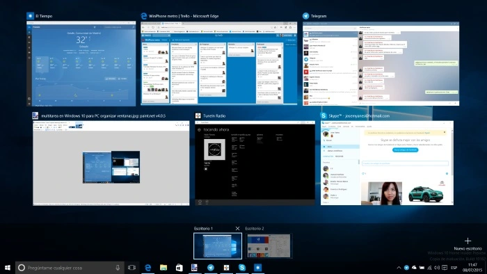
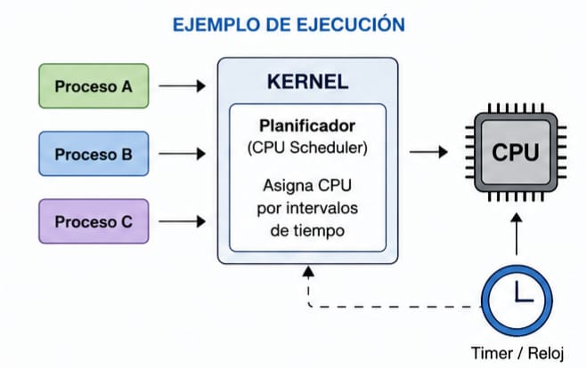

Como Linux hace mil cosas a la vez.
Loading...
Procesando
Un **Proceso** es simplemente un programa en ejecucion. Cada procesos tiene un ID único llamado **PID**.

¿Qué es una multitarea?
Se refiere a la capacidad de un sistema para ejecutar múltiples procesos o tareas de forma simultánea o aparentemente simultánea. Esta funcionalidad es el corazón de la experiencia de usuario moderna, permitiéndonos realizar varias actividades al mismo tiempo en nuestros dispositivos.

¿Comó ejecuta varios programas al mismo tiempo?
Linux ejecuta varios programas simultáneamente mediante la multitarea preventiva, donde el núcleo (kernel) asigna fracciones de tiempo del procesador (CPU) a cada programa de forma intercalada administrando la memoria y los recursos de manera eficiente. El planificador del sistema operativo cambia rápidamente entre procesos, dando la impresión de una ejecución paralela en tiempo real.
